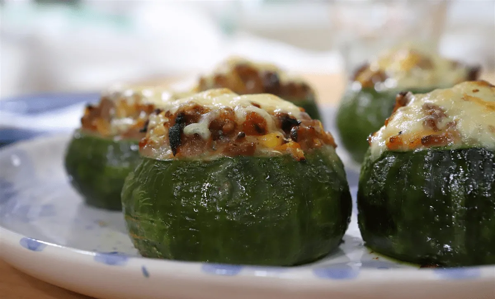
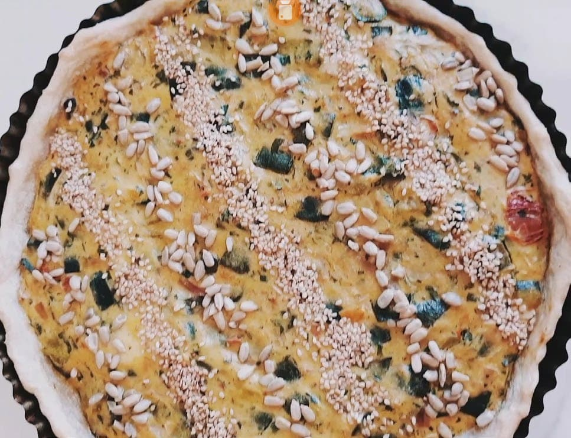
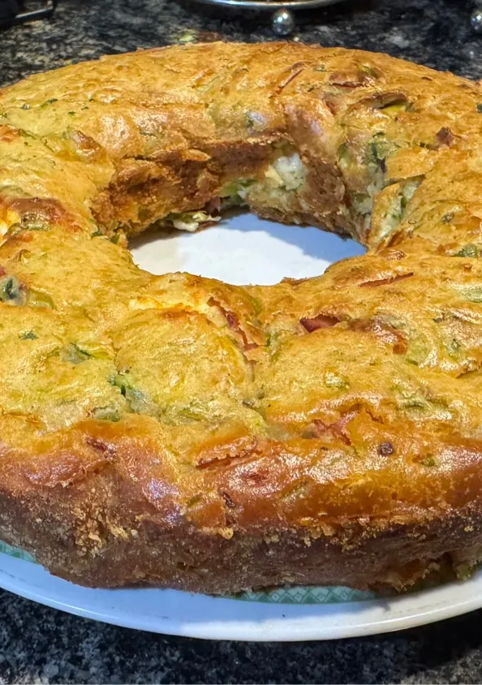

Lavar los zapallitos y córtalos en cubos pequeños.
Cortar la cebolla en cubos pequeños.
En una sartén, cocinar la cebolla a fuego medio hasta que esté transparente.
Agregar los zapallitos y cocina, revolviendo constantemente, durante 5-7 minutos, o hasta que estén tiernos.
Batir los huevos en un tazón y agregar sal y pimienta al gusto.
Agregar los huevos batidos sobre los zapallitos y cocina, revolviendo constantemente, hasta que los huevos estén cocidos.
Agregar el queso rallado y cocina hasta que se derrita.
Servir caliente.
Zapallitos rellenos

Pasos:
Precalentar el horno a 180 grados centígrados.
Lavar los zapallitos y cortalos.
Con una cuchara, sacar la pulpa de los zapallitos, dejando un borde de aproximadamente 1 cm.
En una sartén grande, cocinar la cebolla y el ajo en aceite de oliva a fuego medio, hasta que estén suaves.
Agregar la carne picada y cocinar, revolviendo constantemente, hasta que esté dorada.
Incorporar el arroz, el queso rallado, el perejil, la sal y la pimienta.
Rellenar los zapallitos con la mezcla de carne y colocarle queso para gratinar.
Coloca los zapallitos en una fuente para horno y hornea durante 20-25 minutos, o hasta que estén tiernos.
Tarta de Zapallitos

Pasos:
Cortar los zapallitos en cubos ni muy grandes ni muy chiquitos. Medianitos. La cebolla y el morrón del tamaño que más feliz los hagan. Yo los corto chiquitos, pero la decisión les pertenece.
Una vez que los tengamos, vamos a poner en una sartén un poco de aceite y vamos a saltear la cebolla y el morrón rojo por unos pocos minutos. Sumar los zapallitos y los dejamos dorar por unos 5 minutos. Es importante esperar a que se evapore el agua que largan los zapallitos, sino la tarta va a quedar aguada y no queremos que eso suceda. Por otro lado si se cocina demasiado la tarta de zapallitos quedará amarga, por lo que hay que cocinarlo al punto justo: una vez que se evapore ya está listo y lo retiramos.
Reservar los zapallitos a un costado hasta que se enfríen o por lo menos estén a una temperatura. Mientras esperamos colocamos los huevos con el queso crema y les damos con el tenedor hasta que queden homogéneos. Una vez que esté todo cocido vamos al próximo paso.
Ahora sí, si ya le bajó la temperatura a las verduras y la mezcla está bellamente unida le agregamos el queso en cubitos y la mezcla de cebolla, morrón y zapallitos. Mezclar bien y salpimentar a gusto.
Colocar el relleno en una masa de tarta colocada en un molde (queda bien con cualquiera pero con una masa crocante la rompe) y llevamos a horno a 180° por unos 30 minutos.
Budin de zapallitos

Pasos:
Picar cebolla y picar o rallar zapallitos. Yo lo hice en la picadora.
En una sartén saltear la cebolla y zapallitos. Cocción 7 minutos. Que se consuma líquido. Condimentar y dejar enfriar.
Batir los huevos con leche y aceite, sumar la harina.